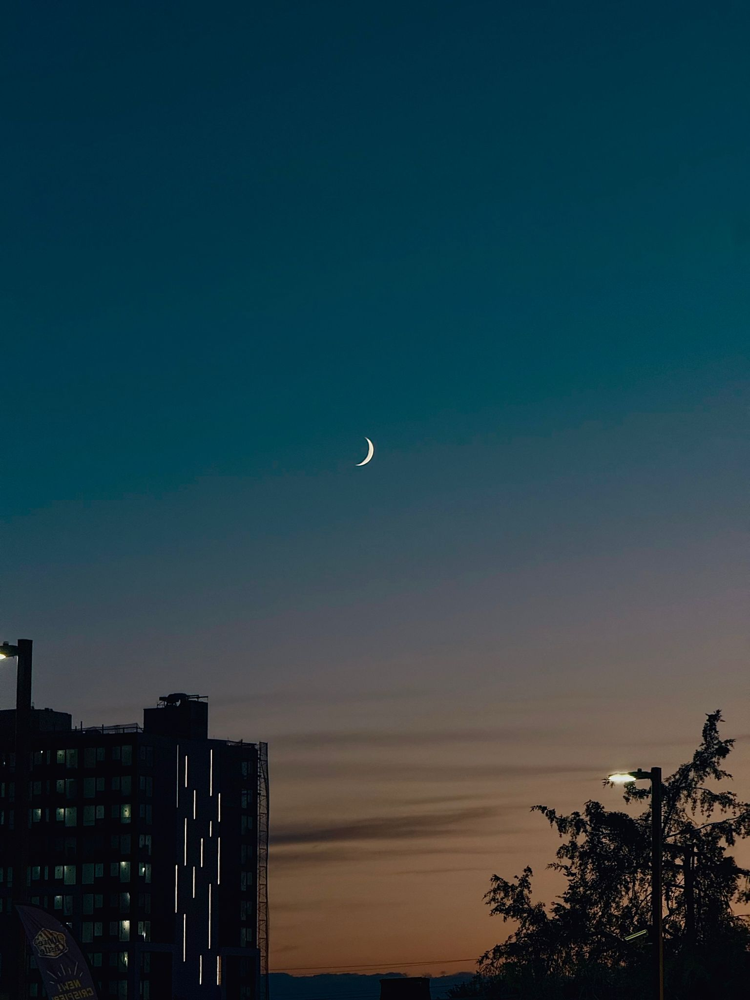

Featured Projects
AI Portraits – Human & Machine Collaboration
A series exploring how GANs and Stable Diffusion reinterpret human portraiture. Original photographs are transformed into surreal and artistic variations.
Dream City – AI-Generated Urban Futures
City photography reimagined using AI models, transforming urban skylines into futuristic and dreamlike environments.
Moonrise – Urban Evening
A twilight photo capturing the crescent moon above the city skyline. This image is part of my Media Arts portfolio, exploring how natural light and urban environments intersect.